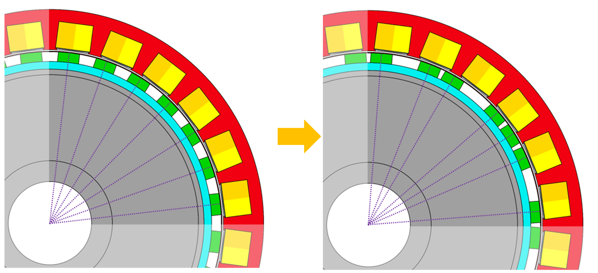
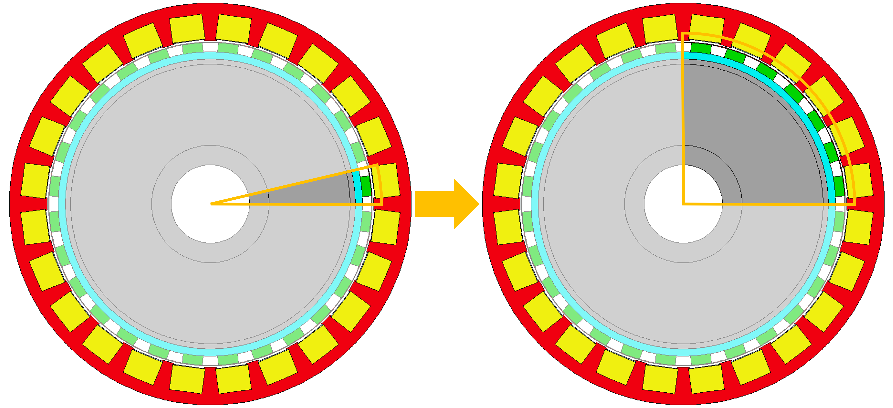
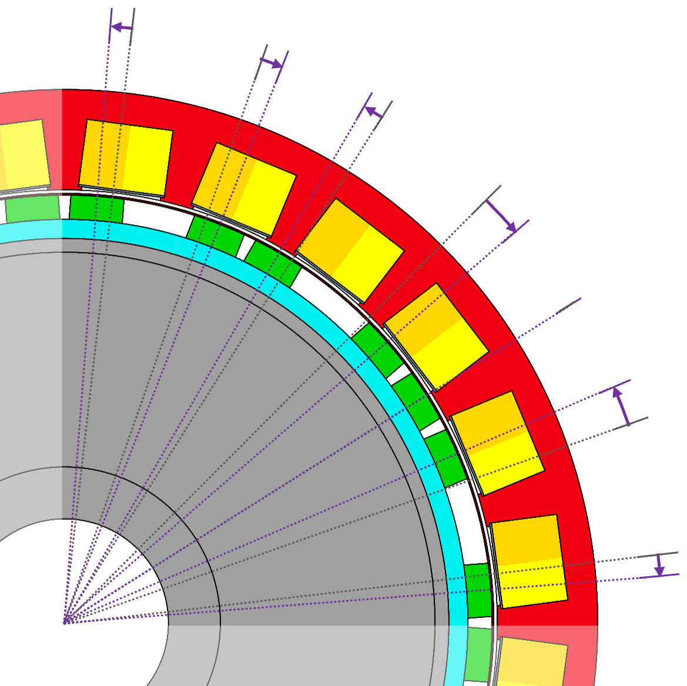
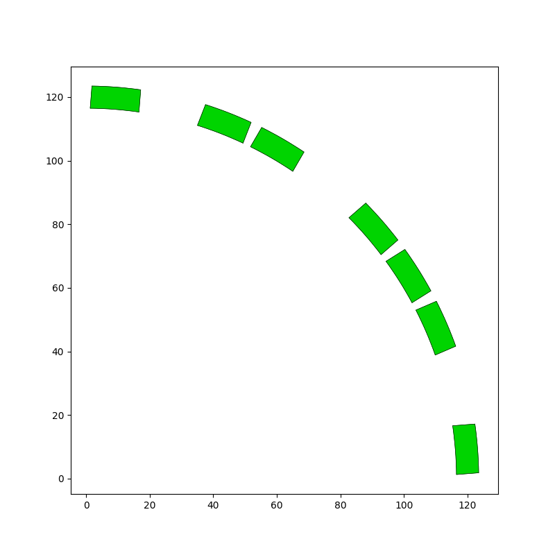
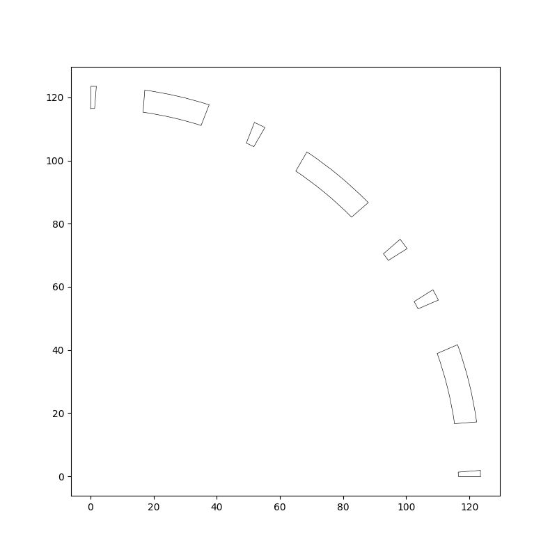
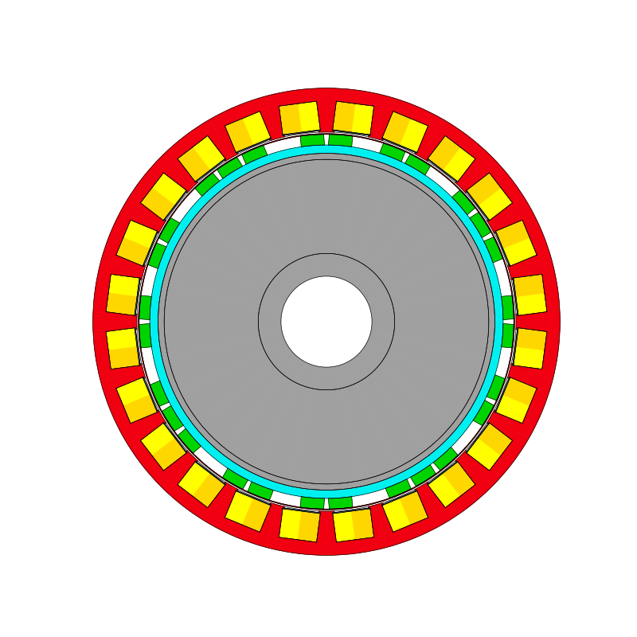

Note
Go to the end to download the full example code.
Asymmetric Surface Permanent Magnet Rotor#
This script applies the adaptive templates functionality to modify a 28 pole surface permanent magnet rotor to have an asymmetric arrangement of magnets.
Note
This example uses Motor-CAD Geometry Tree functionality, introduced in v2026.1.1 (Motor-CAD 2026 R1) and PyMotorCAD v0.8.4 or later.
Note
This example modifies the symmetry of the rotor region. By default, Motor-CAD standard template geometry uses 1 rotor region per magnet pole. This example modifies the symmetry so that the model geometry has 4 rotor regions, each spanning a quarter of the machine. This means that the Symmetry setting under Model Size on the Input Data -> Settings -> Calculation tab in Motor-CAD must be set to Full Non-Symmetry for the FEA calculation to solve.
Each magnet position is shifted by rotating by an offset angle. The offset angle parameters are defined as new adaptive templates parameters.
{kind=link}

Perform required imports#
Import pymotorcad to access Motor-CAD.
Import RegionType, Line, Arc, Coordinate, rt_to_xy and EntityList for
creating the adaptive templates geometry.
Import draw_objects to plot figures of geometry objects.
Import deepcopy to copy geometry objects.
Import os, shutil, sys, and tempfile
to open and save a temporary .mot file if none is open.
# from copy import deepcopy
import os
import shutil
import sys
import tempfile
import ansys.motorcad.core as pymotorcad
from ansys.motorcad.core.geometry import Arc, Coordinate, EntityList, Line, RegionType, rt_to_xy
from ansys.motorcad.core.geometry_drawing import draw_objects
# from ansys.motorcad.core.geometry_drawing import draw_objects
# import ansys.motorcad.core.geometry_tree as geo_tree
Connect to Motor-CAD#
If this script is loaded into the Adaptive Templates file in Motor-CAD, the current Motor-CAD instance is used.
If the script is run externally, these actions occur: open a new Motor-CAD instance, load the a2
SPM motor template, set the Symmetry setting under Model Size to Full Non-Symmetry
(Input Data -> Settings -> Calculation tab), set the Magnet Arc [ED] to 100 ° and save
the file to a temporary folder. To keep a new Motor-CAD instance open after executing the script,
use the MotorCAD(keep_instance_open=True) option when opening the new instance. Alternatively,
use the MotorCAD() method, which closes the Motor-CAD instance after the script is executed.
if pymotorcad.is_running_in_internal_scripting():
# Use existing Motor-CAD instance if possible
mc = pymotorcad.MotorCAD(open_new_instance=False)
else:
mc = pymotorcad.MotorCAD(keep_instance_open=True)
# Disable popup messages
mc.set_variable("MessageDisplayState", 2)
if not "PYMOTORCAD_DOCS_BUILD" in os.environ:
mc.set_visible(True)
mc.load_template("a2")
mc.set_variable("MagneticSymmetry", 3) # set Full Non-Symmetry
mc.set_variable("Magnet_Arc_[ED]", 100)
# Open relevant file
working_folder = os.path.join(tempfile.gettempdir(), "adaptive_library")
try:
shutil.rmtree(working_folder)
except:
pass
os.mkdir(working_folder)
mot_name = "a2_Asymmetric_SPM"
mc.save_to_file(working_folder + "/" + mot_name + ".mot")
# Reset geometry to default
mc.reset_adaptive_geometry()
Get required parameters and objects#
From Motor-CAD, get the adaptive parameters and their values.
Use the set_adaptive_parameter_default method to set the required symmetry factor
(Symmetry Factor) parameter if undefined, and get the value.
{kind=link}

In this example, the 28 pole rotor is split into quarters, with each quarter containing 7 magnets. The default symmetry factor value is set to 7.
mc.set_adaptive_parameter_default("Symmetry factor", 7)
symmetry_factor = int(mc.get_adaptive_parameter_value("Symmetry factor"))
This example sets an offset angle for each of the 7 magnets, which define how many degrees each magnet will be shifted by.
{kind=link}

Define some default values for the offset angles. Include a check for the case where the
symmetry factor is set to a higher number than the length of the
offset_angle_default_values list. In this case, set values of 0 ° for any extra angles.
Define the following angles for the 7 magnets, going anti-clockwise from the magnet closest to the x-axis:
-2 °
+4 °
0 ° (this magnet is not offset)
-4 °
+2 °
-2 °
+2 °
offset_angle_default_values = [-2, 4, 0, -4, 2, -2, 2]
extra_values_req = symmetry_factor - len(offset_angle_default_values)
if extra_values_req > 0:
for i in range(extra_values_req):
offset_angle_default_values.append(0)
Set the required asymmetric magnet offset angle (Magnet Offset Angle x, where x is
the magnet number) parameters if undefined, and get the values. Append the offset angle parameters
to the offset_angles list.
offset_angles = []
for i in range(symmetry_factor):
mc.set_adaptive_parameter_default(
f"Rotor Pole Offset Angle {i+1}", offset_angle_default_values[i]
)
offset_angles.append(mc.get_adaptive_parameter_value(f"Rotor Pole Offset Angle {i+1}"))
Get the standard template regions to be modified. This example works using the geometry tree functionality. Get the geometry tree, then get the standard template regions based on the region type.
Create the Adaptive Templates geometry#
Modify symmetry of original magnet and air regions#
This example works by changing the number of times that geometry regions are duplicated.
By default, a 28 pole rotor geometry is set up by defining the geometry for one rotor pole, and then duplicating this 28 times to form the full motor.
In this example, we will define a new magnet geometry for 4 consecutive rotor poles, and this 4-pole magnet geometry will be duplicated 7 times to form the full motor. Instead of the original 1 magnet per pole that is defined for the standard template geometry, 4 magnets will be defined.
Modify the duplication angles of the original magnet and rotor air regions.
for magnet in magnets:
magnet.duplications = int(magnet.duplications / symmetry_factor)
for air_region in rotor_air:
air_region.duplications = int(air_region.duplications / symmetry_factor)
Create full air band region#
The rotor air regions will be recreated based on the new magnet positions. To do so, define the full rotor air region. Magnet regions will be subtracted from this to form the multiple new rotor air regions.
Find the rotor air outer and inner radii (rad_max and rad_min). Use the
Coordinate.get_polar_coords_deg() method to return the polar coordinates of point coordinates.
rad_max = 0
rad_min = 10000
for entity in rotor_air[0].entities:
rad, __ = entity.end.get_polar_coords_deg()
if rad > rad_max:
rad_max = rad
elif rad < rad_min:
rad_min = rad
# Create the entities for drawing the full rotor air band before it is split into individual
# regions. Use the ``rt_to_xy`` from ``ansys.motorcad.core.geometry`` to convert from polar
# to cartesian coordinates.
p1 = Coordinate(*rt_to_xy(rad_min, 0))
p2 = Coordinate(*rt_to_xy(rad_max, 0))
p3 = Coordinate(*rt_to_xy(rad_max, 360 / rotor_air[0].duplications))
p4 = Coordinate(*rt_to_xy(rad_min, 360 / rotor_air[0].duplications))
full_rotor_air_entities = EntityList()
full_rotor_air_entities.append(Line(p1, p2))
full_rotor_air_entities.append(Arc(p2, p3, centre=Coordinate(0, 0)))
full_rotor_air_entities.append(Line(p3, p4))
full_rotor_air_entities.append(Arc(p4, p1, centre=Coordinate(0, 0)))
draw_objects(full_rotor_air_entities)
Duplicate and rotate the original magnet region#
Create copies of the original magnet region and rotate the magnets based on the ‘offset_angles’.
For each additional magnet:
Use the
create_regionmethod to create a new region in thegtgeometry tree. Thecreate_regionmethod requiresregion_typeandparentparameters.Set the
region_type=RegionType.magnetto create a magnet region, and set theparentto the original magnet region’s parent.Set the material, colour and symmetry properties of the new magnet region.
Give the new magnet region a name.
Use the
replacemethod to replace the new magnet region’s entities with those of the original magnet, then rotate the region around the origin. The rotation angle can be calculated from the duplication number (symmetry) and adaptive parameters (symmetry factor and the offset angle for the particular magnet).Calculate and set the new magnet angle, which defines the direction in which the magnet is polarised.
For even numbered magnets, set the polarity to
Sand switch the magnetisation to the opposite direction by subtracting 180 ° from themagnet_angle. For odd numbered magnets, set the polarity toN.Append all magnets to the
new_magnetslist.
new_magnets = []
for magnet in magnets:
new_magnets.append(magnet)
for i in range(symmetry_factor - 1):
new_magnet = gt.create_region(region_type=RegionType.magnet, parent=magnet.parent)
new_magnet.material = magnet.material
new_magnet.colour = magnet.colour
new_magnet.duplications = magnet.duplications
new_magnet.name = f"{magnet.name}_{i + 1}Offset"
new_magnet.replace(magnet)
rot_angle = ((i + 1) * 360 / (magnet.duplications * symmetry_factor)) + offset_angles[i + 1]
new_magnet.rotate(Coordinate(0, 0), rot_angle)
new_magnet.magnet_angle = magnet.magnet_angle + rot_angle
if i % 2 == 0:
new_magnet.magnet_polarity = "S"
new_magnet.magnet_angle -= 180
else:
new_magnet.magnet_polarity = "N"
new_magnets.append(new_magnet)
Rotate the original magnet by its offset angle (if non-zero). Do this last so that the original magnet’s position could be used for calculating the new magnet positions. Draw the magnet regions.
if offset_angles[0] != 0:
new_magnets[0].rotate(Coordinate(0, 0), offset_angles[0])
new_magnets[0].magnet_angle += offset_angles[0]
draw_objects(new_magnets)

Subtract regions from rotor air band to get new air regions#
Add the full rotor air region to the geometry tree using the create_region geometry tree
method. Specify the RegionType (rotor air) and the parent region of the rotor air region (the
same as the parent of the original rotor air region). Set the duplication number and set the
entities to the full_rotor_air_entities list that was defined earlier.
Subtract the magnet regions from the full rotor air region to get the separate rotor air regions
that will sit between the magnets. Use the subtract region method, which returns a list of
additional regions in the case where subtracting a magnet from the air region results in more than
one region. Name the additional air regions and store them in the all_extras list. Draw the
rotor air regions.
all_extras = []
i = 0
for magnet in new_magnets:
extras = full_rotor_air.subtract(magnet)
for extra in extras:
extra.name = f"RotorAir_{i}"
all_extras.extend(extras)
i += 1
to_draw = [full_rotor_air]
to_draw.extend(all_extras)
draw_objects(to_draw)

The original air region must also be renamed. It is no longer the full rotor air region. It is now the last individual rotor air region going clockwise from the x-axis.
full_rotor_air.name = f"RotorAir_{i}"
Now that the new rotor air regions have been created, remove the original rotor_air regions
from the geometry tree.
for region in rotor_air:
gt.remove_region(region)
So far, only the last air region full_rotor_air has been added to the geometry tree. Add the
other rotor air regions (stored in the all_extras list) to the geometry tree using the
create_region geometry tree method. For each new rotor air TreeRegion: create the new
TreeRegion, set the name, entities and duplication number.
Link the first and last rotor air regions (going clockwise from the x-axis). These are the
regions either side of the symmetry boundary, and will form a continuous region in the full motor
model. Use the linked_region method to set the linked region of the first rotor air region to
be the full_rotor_air region (the last rotor air region).
i = 0
for region in all_extras:
new_air_region = gt.create_region(full_rotor_air.region_type, full_rotor_air.parent)
new_air_region.name = region.name
new_air_region.entities = region.entities
new_air_region.duplications = full_rotor_air.duplications
if i == 0:
new_air_region.linked_region = full_rotor_air
i += 1
Set the modified geometry tree in Motor-CAD#
Set the geometry tree and draw the geometry tree.
mc.set_geometry_tree(gt)
draw_objects(gt, full_geometry=True, axes=False)

Load in Adaptive Templates script if required#
When this script is run externally, the script executes the following:
Set Geometry type to Adaptive.
Load the script into the Adaptive Templates tab.
Go to the Geometry -> Radial tab to run the Adaptive Templates script and display the new geometry.
Note
When running in a Jupyter Notebook, you must provide the path for the Adaptive Templates script
(PY file) instead of sys.argv[0] when using the load_adaptive_script() method.
if not pymotorcad.is_running_in_internal_scripting():
mc.set_variable("GeometryTemplateType", 1)
mc.load_adaptive_script(sys.argv[0])
mc.display_screen("Geometry;Radial")
Total running time of the script: (0 minutes 28.540 seconds)